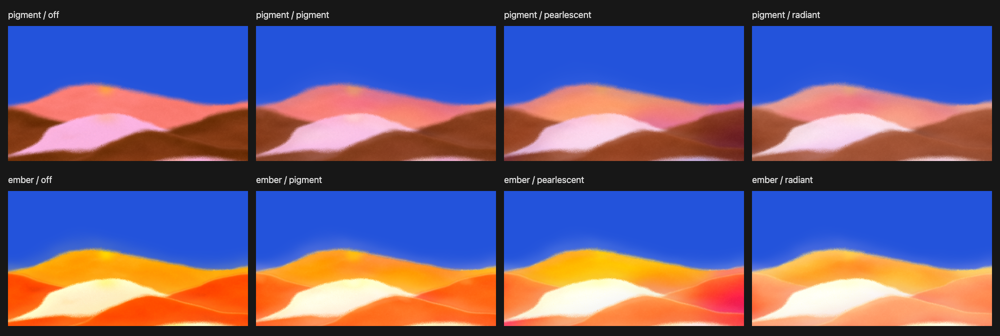

Четыре базовых цвета, одна геометрия, seed 80423. В каждой строке меняется только характер смежных оттенков: Amount 0, затем Pigment, Pearlescent и Radiant при Amount 90 / Hue range 70. В верхнем ряду палитра Pigment, в нижнем — Ember. Свечение одинаково внутри каждого ряда.
Сохранённые изображения до обновления форм. Текущее сравнение: формы и материал
